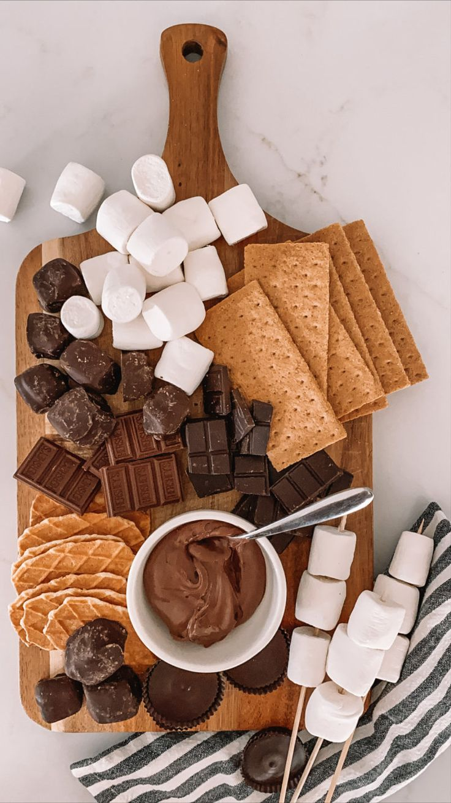

As Lorelai Gilmore so graciously quotes, 'I love snow', and with similar sentiments, I couldn't have said it better myself. Despite what others may say, that time of year is truly magical. I'm not just a fan of the rain; I relish thunderstorms. I adore the wild embrace of a blustery, windy day. And then, there's the pièce de résistance - the splendid amalgamation of fall and winter. The leaves gracefully transforming into a myriad of hues, the wardrobe transitioning into layers of warmth and style, and as if on cue, the sky sends down its icy crystals, blanketing the world in a pristine coat of snow. Who doesn't revel in the embrace of cozy seasons?
Ah, yes, the clothes – a symphony of textures and colors that paint a portrait of comfort. As the temperatures dip, our wardrobes come alive with cozy sweaters, soft scarves, and fashionable boots. It's as if our attire mirrors the evolving landscape around us, echoing the beauty of change. And let's not forget the vibes – those ineffable feelings that waft through the air like the scent of freshly baked apple pie. There's something undeniably captivating about the atmosphere during these months; a sense of togetherness and warmth that makes every moment spent indoors or outdoors a cherished memory in the making.
Picture this: a brisk, chilly day outside, but you're nestled indoors with a steaming mug of cocoa clasped between your hands. The mere thought of it is enough to conjure a smile. That magical combination of sipping hot cocoa while observing the snow's balletic descent is nothing short of a sensory delight. It's a reminder that life's simple pleasures are often the most profound. As Lorelai Gilmore so eloquently said, "Everything's magical when it snows." It's as if the world is adorned in a gown of pure enchantment, and we're invited to be a part of its wondrous dance.
Curating the Cozy Experience
But how do we truly make the most of these cherished months? How do we ensure that the cozy season doesn't slip through our fingers like grains of sand? If you're someone who, like me, believes in embracing every moment and squeezing the juice out of life, then this guide is for you. Here are some curated experiences and activities that will infuse your fall and winter with an extra dose of magic:
- Nature's Artistry: Take leisurely walks or hikes to witness nature's masterpiece – the changing leaves. Capture the kaleidoscope of colors through your camera lens and create your own autumn gallery.
- Homey Hygge: Transform your living space into a sanctuary of coziness. Soft blankets, scented candles, and a curated playlist of soothing melodies can work wonders.
- Culinary Adventures: Experiment with seasonal recipes that warm the soul – from hearty stews to pumpkin-spiced treats. Invite friends and family for a potluck to share the joy of cooking and eating together.
- Outdoor Escapades: Embrace the chill by engaging in outdoor activities like ice skating, building snowmen, or even trying your hand at skiing or snowboarding if you're feeling adventurous.
- Fireside Chats: Gather around a crackling fire, either outdoors under the starlit sky or indoors in the comfort of your home. Share stories, laughter, and heartfelt conversations with loved ones.
- Literary Journey: Select a reading list filled with classic novels, mysteries, or heartwarming tales. There's something uniquely satisfying about getting lost in a book while the world outside is adorned with nature's splendor.
- Festive Spirit: Immerse yourself in local fall and winter festivals. From pumpkin patches to holiday markets, these events capture the essence of the season and offer wonderful opportunities for memorable experiences.
- Reflect and Rejoice: Take time for introspection. Use the quieter moments of fall and winter to set intentions for the coming year, meditate, or simply be present in the stillness.
As Lorelai Gilmore's quote suggests, the magic of these seasons is a gift waiting to be unwrapped. With the right mindset and a touch of intention, you can turn every day into a canvas of wonder and create a treasure trove of cherished memories. So, as the first leaves begin to change and a cool breeze whispers promises of snow, let's embark on a journey to make this fall and winter truly special. After all, life is a collection of moments, and it's up to us to infuse them with the magic they deserve.
Warmly, Natalie and Mina